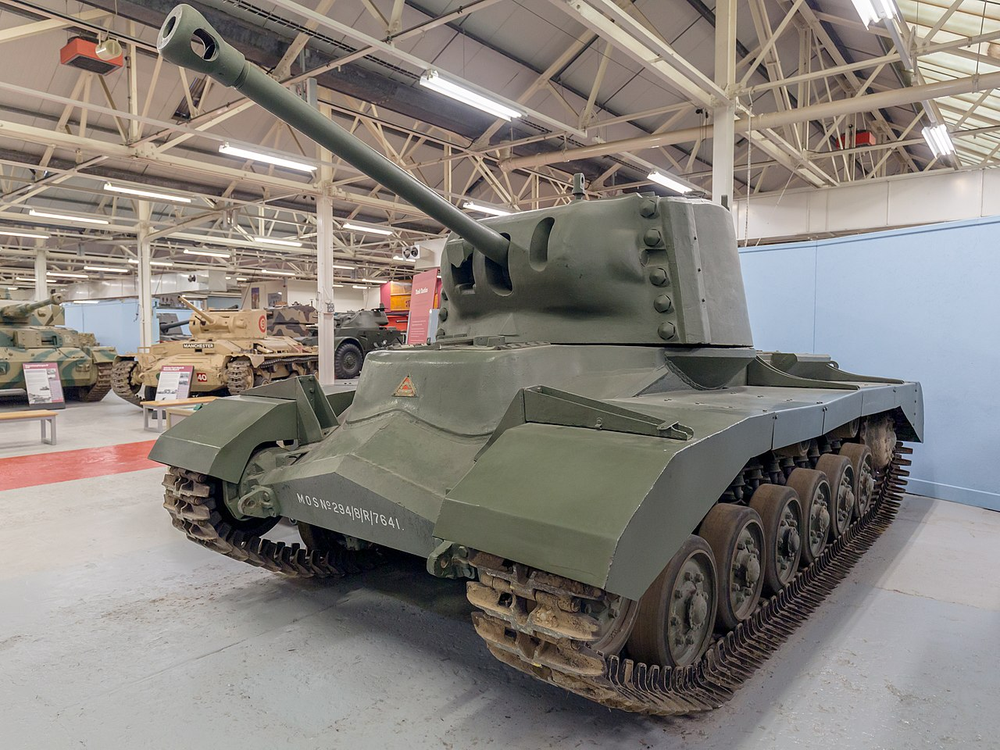
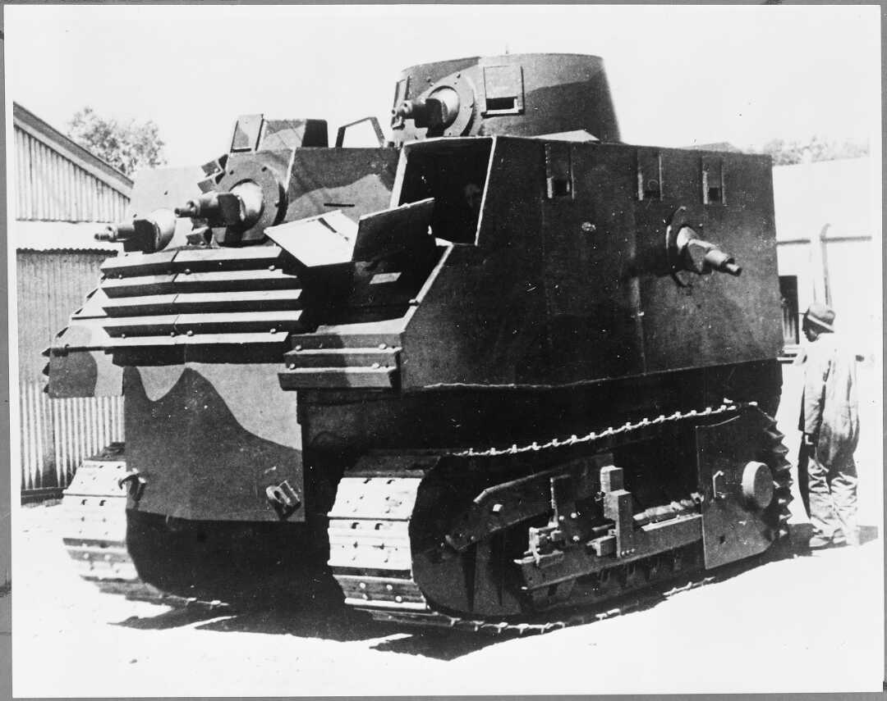

Os piores design de tanques da segunda guerra mundial
ninguem pediu por isso
ninguem pediu por isso
Primeiro Tanque: BT-42 vulgo melhor tanque
o BT-42 foi um tanque finlandes construido durante a guerra da continuação em 1942, olhando por cima ele parece um tanque normal, mas na realidade ele é quase um frankestein, o tanque foi feito pelos finlandeses mas o casco era o de um BT-7, um tanque russo, a torre foi feita pelos próprios finlandeses, o canhão era um 114mm 4.5-inch howitzer feita no reino unido, o motor era um Mikulin M-17T V-12 que foi feito pelos alemães, e ele usava uma suspensão christie feita pelos americanos
se fosse só isso o tanque não teria nada de ruim, mas a torre era muito pesada pro tanque, colocando muito peso no coitado e sobrecarregando a suspensão, a armadura da torre também era horrivel, se um tanque acertasse ela, era praticamente garantido que ninguem dentro do bt-42 ia sobreviver, ele também era horrivel na guerra anti-tanque, sofrendo muito pra eliminar alvos grandes, os finlandeses tentaram contornar esse problema trocando a munição, de uma HE pra uma HEAT feita pelos alemães, mas ela não era adequada para por causa da diferença entre o 4.5-inch howitzer com os canhões alemães originais.
durante a ofensiva sovietica em 1944, um BT-42 acertou um IS-2 18 vezes, falhando em imobilizar o tanque sovietico em todas as vezes porque as os fusíveis do BT-42 se recusaram a funcionar corretamente, a parte mais impressionante disso é o IS-2 ter demorado tanto pra eliminar o BT-42 por que pra recarregar o tanque 18 vezes teria demorado aproximadamente 3 minutos
no total foram feitos 18 modelos do BT-42 e o ultimo modelo vivo esta no Parola Tank Museum em Parola, na Finlandia.
eu só coloquei esse tanque porque gosto muito dele.
Segundo Tanque: A38 Valiant
o Valiant foi um tanque britanico que não teve a sorte de sair dos estagios iniciais sendo apenas um prototipo, a inteção dos britanicos era um tanque medio bem blindado para ser usado contra as forças japonesas mas ele foi um fracasso e só teve 1 prototipo feito
O Valiant era um candidato a tanque de assalto com a blindagem mais espessa e o menor peso possivel parau so no extremo oriente, a intenção era ser parecido com o A33 Excelsier de 40 toneladas, mas muito mais leve, o Valiant conseguiu a mesma blindagem frontal de 114mm com apenas 27 toneladas, ele conseguiu atingir o objetivo mas apenas fazendo compromissos inaceitaveis noutros locais, esse preço terrivel pela concessão de peso levou ao que é provavelmente o pior tanque britanico da 2 guerra
A construção era semelhante ao do tanque de infantaria Matilda, grandes peças de armadura fundidas e aparafusadas, a suspensão era composta por seis rodas de tamanhos iguais em cada lado, com unidade de suspensão independentes para cada uma em vez de bogies, foi expressada preocupação sobre a possível fragilidade dessas unidades em combate, mas a Valiant nunca foi levada a sério fora da estrada para testá-las, 0 sistema de transmissão era traseiro, a partir de um diesel de 210 cv (160 kW), esta baixa potência limitou o tanque a uma velocidade máxima prevista de 19 km/h (12 mph), embora isso ainda fosse aceitável tanto para os conceitos de tanque de infantaria quanto de tanque de assalto .
Seguindo os modelos posteriores Valentine VIII e XI , a torre deveria aceitar o QF 6 libras ou o QF 75 mm , com espaço para uma tripulação de três pessoas (comandante, artilheiro, carregador). Isto foi conseguido ao custo de uma torre grande e pesada com faces quase verticais e uma enorme face frontal fundida com parafusos distintamente proeminentes. O mantelete era interno e um ponto fraco contra tiros precisos de perto. Ao contrário do último modelo Valentines, ele tinha uma metralhadora coaxial.
A suspensão do Valiant foi testada pelo Fighting Vehicle Proving establishment (FVPE) em Chertsey em maio de 1945. O primeiro dia apresentou pequenos problemas e foi abandonado após apenas 13 milhas (21 km) de condução fácil na estrada. No entanto, a esta altura o condutor já estava exausto, descobrindo que as alavancas de direção precisavam de todo o seu peso para funcionar e que o banco, o travão de pé e a alavanca das mudanças apresentavam risco de lesões físicas ao utilizá-las. O Responsável decidiu abandonar imediatamente os ensaios por ser impossível e inseguro continuar, informando que “na sua opinião todo o projecto deveria ser encerrado”, Também houve problemas com a distribuição de peso e a distância ao solo de apenas 9 polegadas (23 cm), e nesse ponto da guerra não havia mais necessidade do tanque, O projeto Valiant foi encerrado.
Mas o tanque não foi completamente inutil, o unico Valiant foi contratado pela School of Tank Technology para os alunos estudarem, no final do curso os alunos eram submetidos a uma inspeção no tanque e eram convidados a encontrar falhas nele, pelo menos ele serviu pra algo.
Atualmente ele pode ser encontrado no The Tank Museum
Terceiro Tanque: Tanque Bob Semple
O Bob Semple, ou então Big Bob foi a primeira aberração criada pela nova zelandia durante a segunda guerra mundial, eles precisavam construir um equipamento militar com os materias disponiveis, o tanque foi construido em ferro corrugado sobre a base de um trator esse tanque foi projetado e construido durante um periodo de incerteza em que a Nova Zelandia temia ter que se defender da invasão Japonesa sem assistencia externa, esse tanque foi um esforço civil para projetar e criar um meio de defender a Nova Zelandia Projetado e construído sem planos ou plantas formais, apresentava inúmeras falhas de projeto e dificuldades práticas, e nunca foi colocado em produção em massa ou usado em combate.
No início da Segunda Guerra Mundial, a Nova Zelândia – tal como a sua vizinha Austrália – não tinha uma indústria indígena de veículos de combate blindados e esperava-se que os veículos de combate blindados fossem importados da Grã-Bretanha. Embora a Austrália e a Nova Zelândia tivessem alguma indústria pesada que pudesse ser voltada para a produção de blindados e veículos blindados, pouca preparação desse tipo havia sido feita. A ideia de mecanizar o Exército da Nova Zelândia foi sugerida antes da guerra, mas sem muitos progressos. Foi sugerido o uso do americano Disston "Six Ton Tractor Tank" , um veículo de 1937 construído a partir de uma caixa blindada sobre um chassi Caterpillar Modelo 35 que havia sido vendido ao Afeganistão . A Nova Zelândia havia construído alguns caminhões blindados improvisados e, incapaz de obter qualquer transportador rastreado da Austrália, estava construindo os seus próprios com placas blindadas importadas da Austrália. Após a queda da França em meados de 1940 e a perda da maioria dos tanques britânicos ali, não havia probabilidade de a produção ser poupada para a Nova Zelândia. Em vez de obter as superestruturas blindadas da América, eles decidiram produzir as suas próprias superestruturas utilizando materiais e recursos locais. Foi decidido que um 'tanque-trator' seria um projeto adequado; se surgisse a necessidade de defesa, uma grande superestrutura de tanque poderia ser aparafusada a uma base de trator em poucas horas, permitindo a rápida transformação e implantação dos tanques. O primeiro protótipo ( aço macio ) foi construído em um trator de esteira Caterpillar D8 , um tipo que estava prontamente disponível. O Departamento de Obras Públicas tinha 81 D8s e outros 19 estavam disponíveis. A falta de armas significava que estava equipado com seis metralhadoras leves Bren - uma em cada lado, duas voltadas para a frente, uma na torre e uma na parte traseira. O veículo era muito alto, com 3,5 m (12 pés) e o desempenho era ruim. Devido à falta de placa de blindagem, foi utilizado revestimento corrugado ( manganês ) na expectativa de desviar as balas. A tripulação de oito pessoas incluía um artilheiro que teve que se deitar em um colchão em cima do motor para disparar sua arma Bren. Os tanques foram construídos sem o uso de quaisquer planos ou plantas formais. Trabalhando a partir de um cartão postal americano representando a conversão de um trator em um 'trator-tanque', Bob Semple e TG Beck (Engenheiro de Obras do Distrito de Christchurch) improvisaram o projeto dos tanques. Usando os recursos disponíveis para Bob Semple como Ministro de Obras Públicas, o trabalho no primeiro tanque começou nas oficinas do PWD em Temuka em junho de 1940. Os dois adicionais foram construídos nas oficinas NZR Addington . O primeiro custou £ 5.902, e o segundo e o terceiro juntos custaram £ 4.323, para um custo total de £ 10.225 (embora o Exército tenha recebido apenas £ 3.414). A intenção era dispersar os cascos em locais preparados para o caso de uma invasão japonesa, quando seriam montados em tratores para uso. A ideia foi descartada depois que os tanques atraíram o ridículo público; no entanto, Bob Semple manteve seu design e até declarou: "Não vejo mais ninguém tendo ideias melhores."
Devido às limitações de requisitos e recursos, o tanque apresentou uma falha funcional. Usando um grande trator como base e aparafusando uma superestrutura de tanque projetada às pressas e mal construída, os tanques resultantes eram inadequadamente blindados, extremamente pesados (20-25 toneladas), instáveis, restritos pela engrenagem do trator a velocidades lentas e tiveram que pare para mudar de marcha. Além disso, devido ao formato do trator subjacente e às vibrações indevidas, atirar do tanque era difícil e inevitavelmente impreciso. Essas limitações fizeram com que o Bob Semple Tank frequentemente fizesse listas dos "Piores tanques de todos os tempos".
No final, por serem inviáveis, os tanques foram descartados pelo Exército. Eles receberam os números de série do Exército NZ6292 (mantido em Papakura ) e NZ3494 e NZ3495 (mantido em Burnham). Apenas um foi para o Pacífico em 1944, após ter sua blindagem retirada. É possível que o tanque Bob Semple tenha sido potencialmente útil em batalha, já que foi planejado ter um canhão antitanque de 37 mm em vez do canhão Bren na torre; a armadura também era resistente a balas até certo ponto, então poderia ter sido pelo menos um tanto eficaz no caso de uma invasão.
